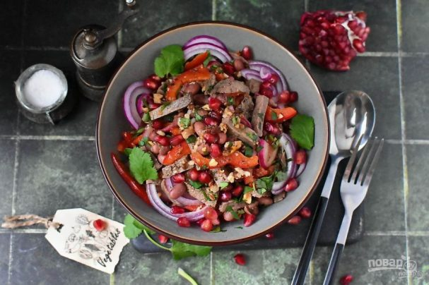
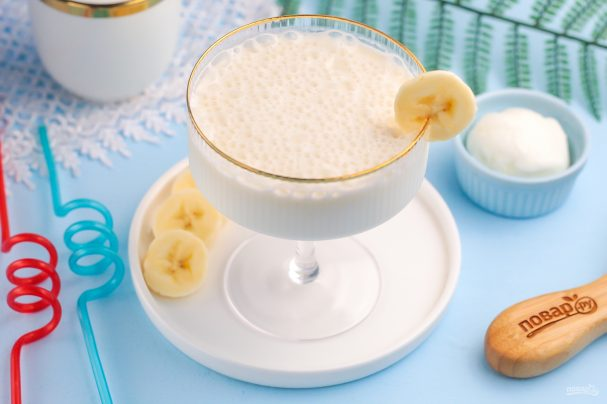
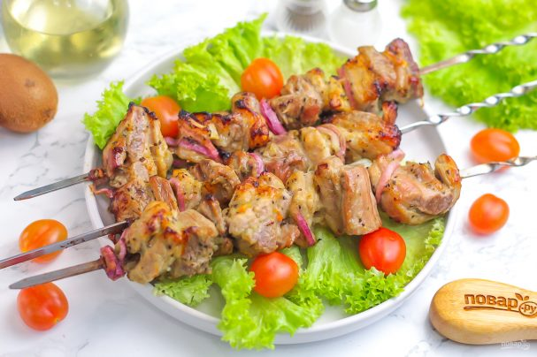
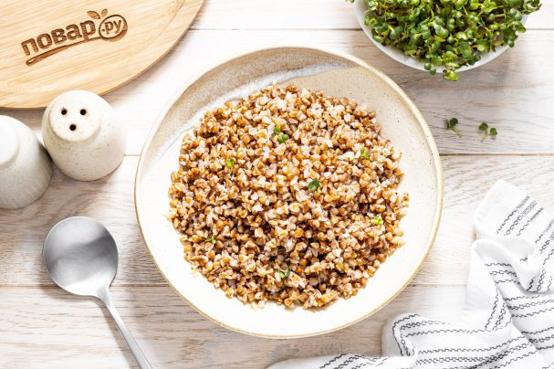
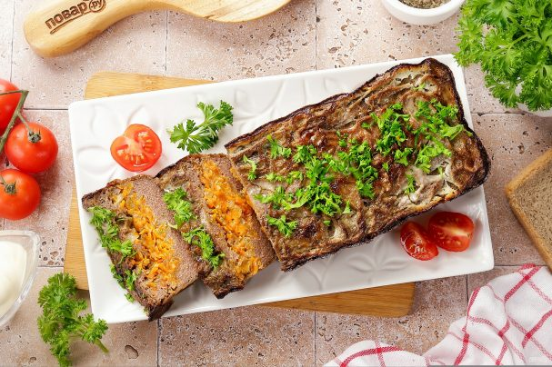

| Название | Оценка | Ссылка на рецепт | Фото блюда |
|---|---|---|---|
| Салат "Тбилиси" с гранатом | 7/10 | https://povar.ru/recipes/salat_tbilisi_s_granatom-96359.html |  |
| Коктейль "Банана мама" | 9.2/10 | https://povar.ru/recipes/kokteil_banana_mama-96374.html |  |
| Шашлык с киви | 100/10 | https://povar.ru/recipes/shashlyk_s_kivi-10326.html |  |
| Каша гречневая | 6.5/10 | https://povar.ru/recipes/kasha_grechnevaya-6022.html |  |
| Печень по-царски | 8/10 | https://povar.ru/recipes/pechen_po-carski-13996.html |  |